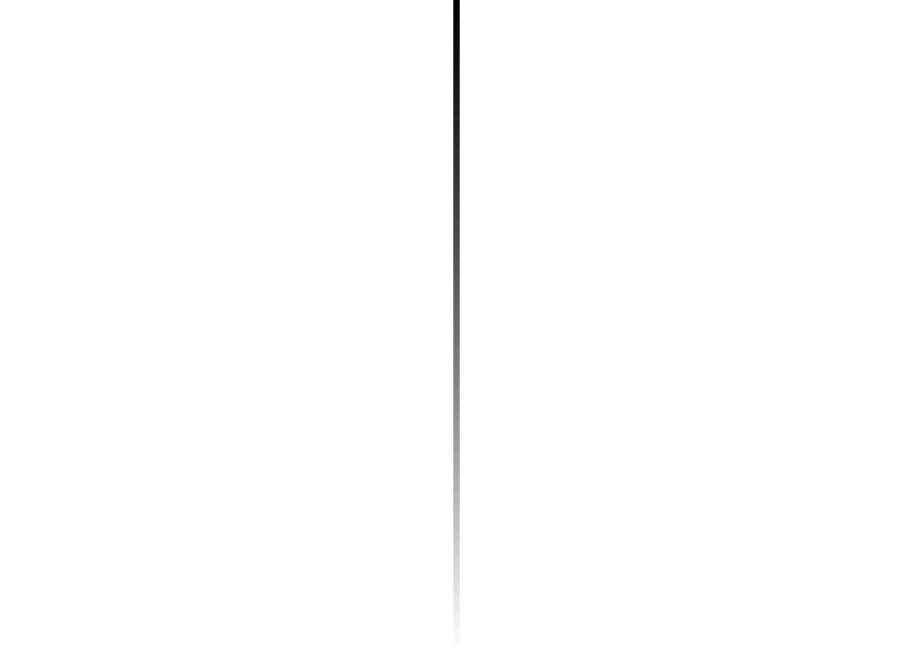

Code
library(RColorBrewer)
library(raster)
library(grid)library(RColorBrewer)
library(raster)
library(grid)hcl.pals(type = "sequential") [1] "Grays" "Light Grays" "Blues 2" "Blues 3"
[5] "Purples 2" "Purples 3" "Reds 2" "Reds 3"
[9] "Greens 2" "Greens 3" "Oslo" "Purple-Blue"
[13] "Red-Purple" "Red-Blue" "Purple-Orange" "Purple-Yellow"
[17] "Blue-Yellow" "Green-Yellow" "Red-Yellow" "Heat"
[21] "Heat 2" "Terrain" "Terrain 2" "Viridis"
[25] "Plasma" "Inferno" "Rocket" "Mako"
[29] "Dark Mint" "Mint" "BluGrn" "Teal"
[33] "TealGrn" "Emrld" "BluYl" "ag_GrnYl"
[37] "Peach" "PinkYl" "Burg" "BurgYl"
[41] "RedOr" "OrYel" "Purp" "PurpOr"
[45] "Sunset" "Magenta" "SunsetDark" "ag_Sunset"
[49] "BrwnYl" "YlOrRd" "YlOrBr" "OrRd"
[53] "Oranges" "YlGn" "YlGnBu" "Reds"
[57] "RdPu" "PuRd" "Purples" "PuBuGn"
[61] "PuBu" "Greens" "BuGn" "GnBu"
[65] "BuPu" "Blues" "Lajolla" "Turku"
[69] "Hawaii" "Batlow" hcl.colors(256, palette = "ag_sunset") [1] "#4B1D91" "#4D1C92" "#4F1C92" "#511B92" "#531B93" "#551B93" "#571A93"
[8] "#591A94" "#5B1A94" "#5C1994" "#5E1995" "#601895" "#611895" "#631895"
[15] "#651796" "#661796" "#681696" "#6A1697" "#6B1697" "#6D1597" "#6E1597"
[22] "#701598" "#711498" "#731498" "#741498" "#761399" "#771399" "#791399"
[29] "#7A1299" "#7C1299" "#7D129A" "#7F119A" "#80119A" "#81119A" "#83109A"
[36] "#84109B" "#86109B" "#87109B" "#88109B" "#8A109B" "#8B0F9B" "#8C0F9B"
[43] "#8E0F9C" "#8F0F9C" "#900F9C" "#910F9C" "#930F9C" "#940F9C" "#950F9C"
[50] "#960F9C" "#980F9C" "#990F9C" "#9A109C" "#9B109C" "#9D109C" "#9E109D"
[57] "#9F119D" "#A0119D" "#A1119D" "#A3119D" "#A4129D" "#A5129D" "#A6139D"
[64] "#A7139C" "#A9149C" "#AA149C" "#AB159C" "#AC159C" "#AD169C" "#AE169C"
[71] "#AF179C" "#B0179C" "#B2189C" "#B3199C" "#B4199C" "#B51A9C" "#B61B9B"
[78] "#B71B9B" "#B81C9B" "#B91D9B" "#BA1D9B" "#BB1E9B" "#BC1F9A" "#BD209A"
[85] "#BE209A" "#BF219A" "#C0229A" "#C12399" "#C22499" "#C32499" "#C42599"
[92] "#C52698" "#C62798" "#C72898" "#C82897" "#C92997" "#CA2A97" "#CB2B96"
[99] "#CC2C96" "#CD2D96" "#CE2E95" "#CF2E95" "#D02F95" "#D13094" "#D23194"
[106] "#D23293" "#D33393" "#D43493" "#D53592" "#D63692" "#D73691" "#D83791"
[113] "#D93890" "#D93990" "#DA3A8F" "#DB3B8F" "#DC3C8E" "#DD3D8E" "#DE3E8D"
[120] "#DE3F8D" "#DF408C" "#E0418B" "#E1428B" "#E2438A" "#E24489" "#E34589"
[127] "#E44588" "#E54687" "#E54787" "#E64886" "#E74985" "#E84A85" "#E84B84"
[134] "#E94C83" "#EA4D82" "#EB4E82" "#EB4F81" "#EC5080" "#EC527F" "#EC537E"
[141] "#ED557E" "#ED567D" "#ED587C" "#ED597B" "#EE5A7B" "#EE5C7A" "#EE5D79"
[148] "#EE5E78" "#EE6078" "#EF6177" "#EF6276" "#EF6475" "#EF6575" "#EF6674"
[155] "#F06873" "#F06972" "#F06A72" "#F06B71" "#F06D70" "#F16E6F" "#F16F6F"
[162] "#F1706E" "#F1716D" "#F1736D" "#F1746C" "#F1756B" "#F2766B" "#F2776A"
[169] "#F27969" "#F27A69" "#F27B68" "#F27C68" "#F27D67" "#F27F66" "#F28066"
[176] "#F28165" "#F28265" "#F38364" "#F38464" "#F38563" "#F38763" "#F38862"
[183] "#F38962" "#F38A61" "#F38B61" "#F38C61" "#F38D60" "#F38E60" "#F38F5F"
[190] "#F3915F" "#F3925F" "#F3935F" "#F3945E" "#F3955E" "#F3965E" "#F3975E"
[197] "#F3985E" "#F3995E" "#F39A5E" "#F39B5D" "#F39D5D" "#F39E5D" "#F29F5D"
[204] "#F2A05E" "#F2A15E" "#F2A25E" "#F2A35E" "#F2A45E" "#F2A55E" "#F2A65F"
[211] "#F2A75F" "#F2A85F" "#F1A960" "#F1AA60" "#F1AB61" "#F1AC61" "#F1AD62"
[218] "#F1AE62" "#F1AF63" "#F1B063" "#F0B164" "#F0B265" "#F0B465" "#F0B566"
[225] "#F0B667" "#F0B768" "#EFB869" "#EFB96A" "#EFBA6A" "#EFBB6B" "#EFBC6C"
[232] "#EEBD6E" "#EEBE6F" "#EEBE70" "#EEBF71" "#EDC072" "#EDC173" "#EDC275"
[239] "#EDC376" "#EDC477" "#ECC579" "#ECC67A" "#ECC77C" "#ECC87D" "#EBC97F"
[246] "#EBCA81" "#EBCB82" "#EACC84" "#EACD86" "#EACE88" "#EACF8A" "#E9D08C"
[253] "#E9D18F" "#E8D191" "#E8D295" "#E7D39A"plot(0,
type = "n",
axes = F,
xlab = "", ylab = "",
xlim = c(0, 1),
ylim = c(0, 1),
xaxs = "i",
yaxs = "i",
omi = rep(0, 4),
oma = rep(0, 4),
mar = rep(0, 4),
frame.plot = F)
rect(0, .5, .8, 1, col = terrain.colors(256))grid.raster(seq(0, 1, .01))
# you can color the matrix directly as well, and generate the raster that way
redGradient <- matrix(hcl(0, 80, seq(50, 80, 10)),
nrow=4, ncol=5)
grid.raster(redGradient)